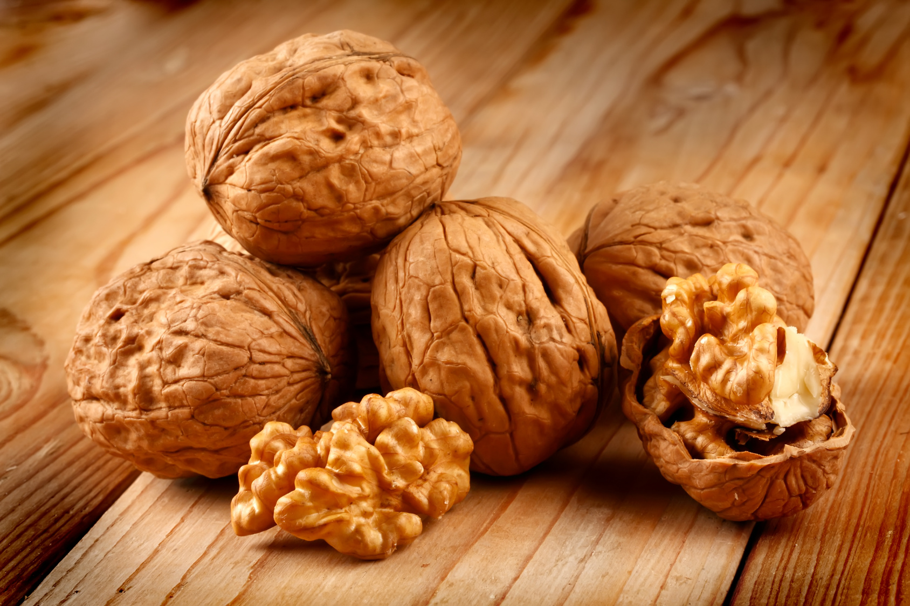
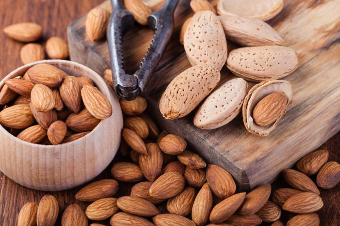
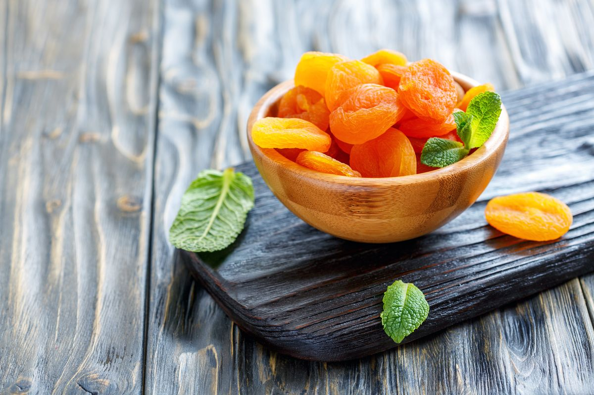

Le nostre offerte invernali!!!

Acquista 4,90€/Kg
Noci
le noci sono fra le varietà di frutta secca più note e amate
per sapore, croccantezza ed estrema versatilità in cucina. Con la loro forma
caratteristica, che ricorda curiosamente gli emisferi del cervello umano, i gherigli
di noce sono un alimento consumato da secoli in tutta Europa, dopo che le noci sono
state importate dai Romani dalle terre d'Oriente.
L'origine del noce è alquanto misteriosa. Probabilmente, si è diffuso a partire
dalle regioni dell'Asia Minore, ai piedi dell'Himalaya. Il noce è coltivato fin
dall'età della pietra. Era un albero molto apprezzato dai Greci che lo amavano per
la maestosità e la bontà dei frutti.
Fu importato a Roma dalla Grecia, nel I secolo a.C. Da lì, si diffuse nel resto
d'Europa.
Gli antichi romani furono i suoi più grandi estimatori. Ne apprezzavano il legno
duro e pesante e i frutti prelibati, considerati un dono divino.
Negli scavi di Pompei sono state trovate noci carbonizzate con le stesse
caratteristiche di quelle coltivate oggi a a Sorrento.
Oggi, i principali Paesi produttori di noci sono la Cina, gli Stati Uniti, la
Francia, l'India, l'Italia e la Turchia.
| Noci, valori per 100g | |
|---|---|
| Energia | 689kcal |
| Fibre | 6,20g |
| Carboidrati | 5,10g |
| Grassi | 68,10g |
| Proteine | 14,30g |
| Acqua | 3,50g |
Acquista 4,90€/Kg

Acquista 2,10€/Kg
Mandorle
Originariamente, il frutto del mandorlo selvatico presentava
una elevata tossicità. Nel corso dei secoli, la pianta è stata selezionata e
addomesticata per essere trasformata in un frutto del tutto commestibile.
Dopo la raccolta, i frutti vengono fatti asciugare all'aria e, successivamente, sono
sottoposti alla smallatura, la separazione dei malli per ottenere il seme, che è la
mandorla vera e propria.
I frutti vengono utilizzati per la maggior parte dall'industria dolciaria, in
particolare per la produzione di confetti, granite, latte di mandorla e torroni, e,
in piccola parte, vengono consumati come frutta secca.
Il mandorlo è una delle numerose specie selvatiche presenti sin dall'antichità nelle
zone montagnose dell'Asia Centrale.
La sua coltivazione inizia già nella prima parte dell'Età del bronzo (3000-2000
a.C.). Alcune mandorle sono state trovate perfino nella tomba di Tutankhamon, in
Egitto (II secolo a.C.). A Roma, il mandorlo era conosciuto come noce greca. Furono
proprio i Romani a diffonderlo in Italia fino ai piedi delle Alpi. Invece, si deve
agli Arabi, grandi estimatori di questa pianta, la diffusione delle mandorle
nell'area mediterranea.
Il mandorlo raggiunse il Nord America nel XVI secolo, mentre in Cile la coltivazione
è iniziata nel XVII secolo.
Oggi, il maggior produttore mondiale di mandorle è la California, seguita da Spagna,
Italia, Grecia e Turchia. In Italia, la cultura del mandorlo è diffusa soprattutto
in Puglia e in Sicilia.
| Mandorle, valori per 100g | |
|---|---|
| Energia | 576kcal |
| Fibre | 12,2g |
| Carboidrati | 21,69g |
| Grassi | 49,42 |
| Proteine | 21,22g |
| Acqua | 4,7g |
Acquista 2,10€/Kg

Acquista 6,74€/Kg
Albicocche secche
Le albicocche sono il frutto dell’albero Prunus armeniaca,
pianta che appartiene alla famiglia delle Rosacee.
Per ottenere la versione essiccata si può procedere con il metodo tradizionale
dell’essiccazione al sole, oppure utilizzare degli essiccatori così da ottenere un
controllo maggiore sul processo di trasformazione.
Un recente studio ha evidenziato come l’utilizzo di anidride solforosa come additivo
alimentare sia in grado di preservare il contenuto di polifenoli, altrimenti ridotti
dal processo di essiccamento e conservazione dell’alimento. È opportuno sottolineare
come questa sostanza non debba però essere introdotta in dosi eccessive nella dieta,
che comunque restano sicure se il consumo si limita alle porzioni consigliate.
Attenzione particolare deve essere posta da parte dei soggetti sensibili a questa
molecola, poiché potrebbe esacerbare reazioni allergiche e asma.
| Albicocche secche, valori per 100g | |
|---|---|
| Energia | 274kcal |
| Fibre | 0g |
| Carboidrati | 66,50g |
| Grassi | 0,50g |
| Proteine | 5g |
| Acqua | 25g |
Acquista 6,74€/Kg